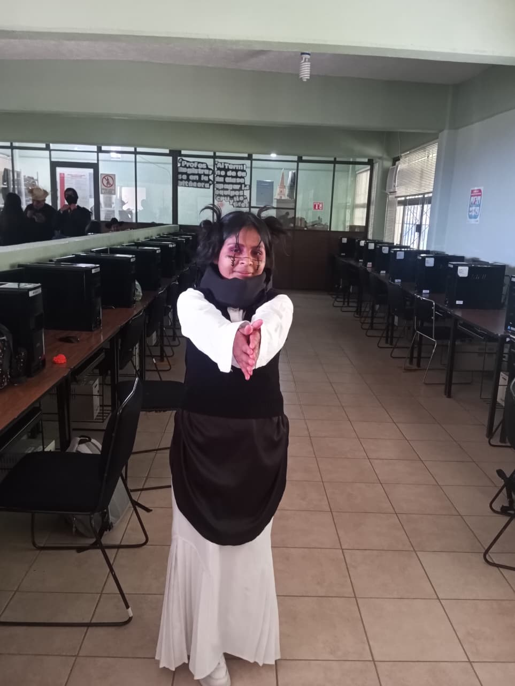
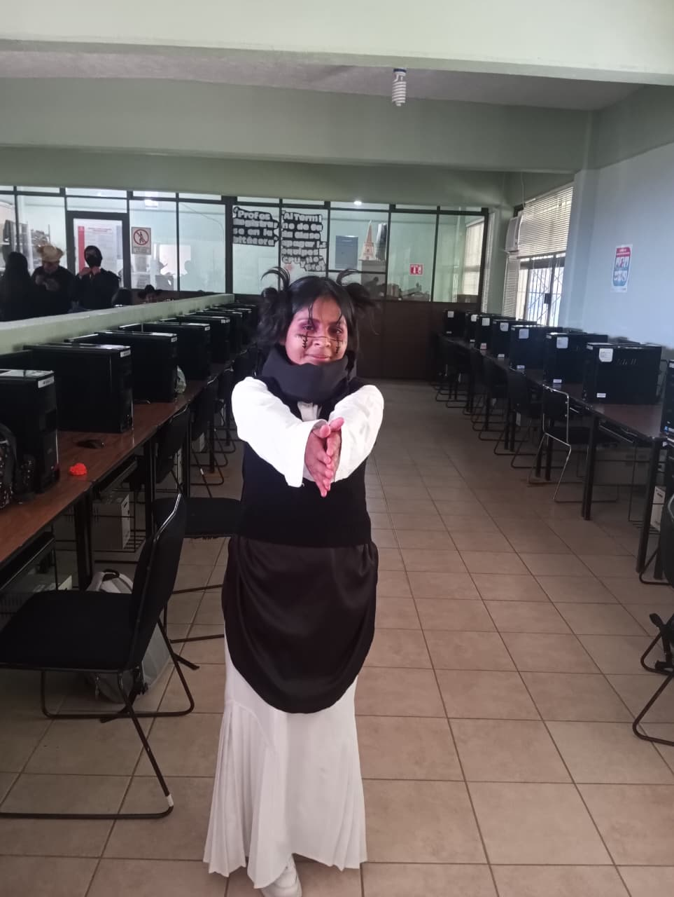

Choso Kamo
Nombre del alumno y grupo
Isela Gomez Peñaloza – Grupo 503
Nombre del personaje / disfraz
Choso
 

Descripción del personaje
Choso es un personaje del anime Jujutsu Kaisen, miembro de las Pinturas de la Muerte. Su historia está marcada por el dolor de perder a sus hermanos y por su lucha interna entre su naturaleza maldita y su humanidad. Su diseño está inspirado en el folclore japonés y el simbolismo de la sangre como vínculo familiar y fuente de poder.
Categoría del personaje
Terror moderno / Fantasía oscura
Detalles del vestuario
Maquillaje pálido con líneas rojas simulando venas, ojos delineados en negro con un toque de morado para simular las ojeras del personaje, cabello recogido en dos coletas altas con el cabello un poco despeinado. Para el vestuario se realizo con una camisa de manga larga, falda larga blanca y un chaleco y bufanda negras simulando las prendas que utiliza el personaje para la manipulación de su ritual maldito.
Declaración de cumplimiento
Este disfraz cumple con todas las reglas de seguridad y respeto establecidas por la institución. No representa violencia explícita ni contenido ofensivo.